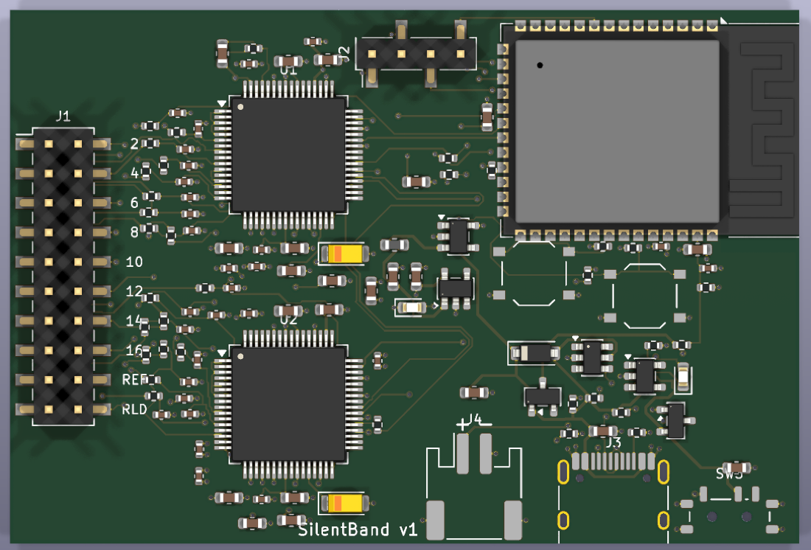

Utter
It feels the tiny muscle signals in your neck and turns them into text. For your messages and your AI agents. No voice, no keyboard.
No sound. Lips closed, nobody hears a word.
Silent moves type any word you want.
Muscle sensors, read 2,000 times a second.
Local. Recognition and the AI run on your computer.
Talking to your phone is loud. Typing pulls your eyes and your hands away. Utter lets you write while you sit in a meeting, ride a train or read your agent's work: you silently move your tongue, and words appear.
What you do, what you hear in your earbud, and what appears on screen. Each move takes 1.7 s here, a real pace, but the guesses are luckier than today's: measured, Utter types about 4.5 words a minute in everyday chat and 7.5 replying to a coding agent.
Your phone stays face down in your lap. You make a few silent moves, and the earbud whispers each word before it's typed. Nine moves, one misheard and undone, then sent.
Your coding agent says a test is failing. You answer without reaching for the keyboard: predictions come from what the agent just said. When it asks permission, one move approves.
Your mum asks if you've landed. The language model already guesses the answer from her question, so it takes four moves, and nobody around you hears a word.
A soft fabric band sits around your neck, with dry sensors on the inside: no gel, on in under a minute. A normal earbud does the talking.
No sound, nothing to see. Behind closed lips you press your tongue up, down, left or right, or shape “ka” without saying it. The band reads those muscle signals.
The AI on your computer predicts the word you mean and whispers it. One more move accepts it, in any app you can type in.
Four tongue moves each pick a group of letters, like an old phone keypad: left means “one of n o p q r s”. The AI keeps the words that fit and shows its best guess. Four more moves steer. Most of the time the AI already knows the next word, so you just do ka.
These are the defaults. At setup Utter records 16 moves on you and keeps the 8 it tells apart best.
Wrong guess? Keep going. Do the group for your next letter and the guess updates. When your word is in the bar, push moves to it and ka types it. jaw undoes the last move.
Every move: lips closed, no sound, about half a second.
Example: answer “still coming tonight?” with “yes”. y is in the right group, e in up, s in left. So you do right, up, left: one move per letter, not hunting for the exact letter. “tar” fits those moves too, but after that question the AI guesses “yes”. Then ka sends it. Try it with your keyboard below.
Each key stands in for one silent move. It's the product's real decoder and word list, running in your browser. Keys run at the band's pace: it reads each move for 0.9 s, answers in your ear, then rests 0.5 s. Go when the voice stops. Too early and it says “too fast”; a key during the rest waits its turn.
Agents need short, frequent replies: yes, run it, fix that test. Utter connects to Claude Code, so every reply starts from what the agent just said.
The agent's last message becomes the AI's context. In our benchmark, that cuts the moves per word by about 40%. Replies you sent before come back, even when the agent asks in other words.
When the agent asks permission, ka allows and jaw denies. You don't need to look at the screen.
When the agent finishes, the earbud reads its first sentence: “Fixed. 24 tests pass.”
Each move uses a different part of the tongue and jaw, so each leaves a different pattern across the sensors. A small model, trained on your own signals in a few minutes, tells them apart, and keeps adapting to you from day to day as you type.

Utter v1 prototype board · 68 × 46 mm · machine-assembledThe v1 prototype kit to scale, built from the same files that make the board and print the case. Turn it, take it apart, and point at any part.
PETG. It has openings for the electrode leads and the motion sensor, windows for the two lights, and pinholes for reset and boot. Five pegs hold the board in place.
68 × 46 mm, 4 layers, 107 parts. Two TI ADS1298 chips read 16 channels at 24-bit. An ESP32-S3 sends the signals to your computer over Wi-Fi. Charging is over USB-C, and recording stops while the cable is plugged in.
LiPo 503040: 3.7 V, 600 mAh, 40 × 30 × 5 mm, with a protection circuit and a JST-PH plug. It sits under the board.
PETG, 79 × 62 × 17 mm closed, 91 mm across the strap lugs. Inside are a shelf for the board, rails for the battery and a pocket for its plug, plus cut-outs for USB-C and the power switch.
M2 × 10 mm, self-tapping. There's no glue, so the battery can be replaced.
Soft, adjustable fabric band with a velcro closure, 65 mm tall at the front. Its 25 mm tabs go through the case lugs, and a mark under the Adam's apple puts it in the same place every day. Washable.
Short snap leads from the band to the 20-pin connector through the lid: 16 sensing channels, a reference (REF) and a driven ground (RLD).
Datwyler SoftPulse, reusable, on snaps sewn into the band: a 3 × 4 grid on the front of the neck, 2 on each side, and REF and RLD beside the case. Wipe them daily. A pack of gel electrodes is included for a one-time signal test.
An LSM6DS3 board on 4 wires. It helps tell jaw movement apart from speech.
This is the prototype kit for early testers: the case is 3D-printed, and the band follows SilentWear, the only dry neckband with multi-day silent-speech results. The Concept view at the top of the page is the same band with the leads sewn inside.
Typing, predictions and the earbud voice, tested end to end on simulated signals.
Boards designed and reviewed, being ordered. Target: noise below 1 µV.
Above 80% accuracy on the 8 moves, with lips closed.
Live typing into chats and agents, in any app.
The dry band worn all day. It re-adapts each morning while you type, with no calibration session.
No. It only picks up deliberate muscle activity when you make one of the eight moves. Thinking a word without moving does nothing.
Your lips stay closed and there is no sound; your tongue and jaw move slightly. Proving that this works with lips closed is exactly the next milestone.
In simulation with real recognition errors from a public silent-speech dataset: about 4 words a minute on a fresh morning and 7.5 once it has adapted to you, replying to a coding agent with a local language model. A reply you sent before comes back almost free. That suits replies and agent prompts more than essays.
Anything you can type in: it types like a keyboard. With Claude Code it goes further, using the agent's messages as context and answering permission prompts.
From the band to your own computer over your Wi-Fi. Recognition and the language model run there, not in the cloud.
No. It's a prototype input device, and it isn't designed or tested for medical use.
We're building the first bands now. Join the waitlist to follow the tests and get early access.
Join the waitlist